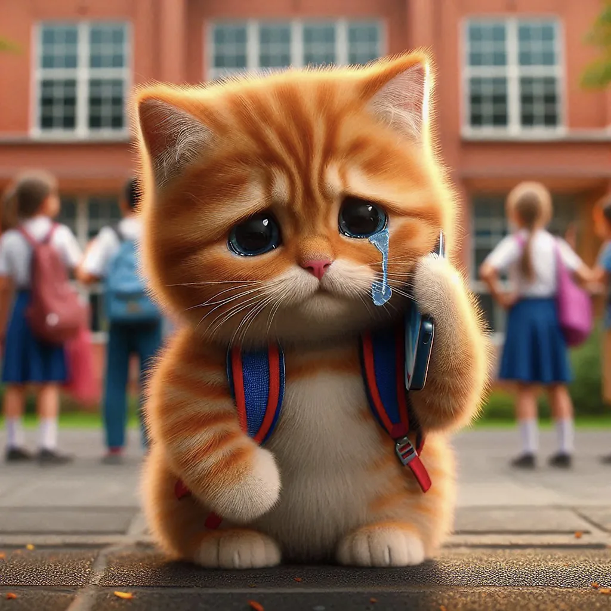

Whether you're a state-sponsored misinformation campaign, a content creator trying to make it big or a company trying to sell a product, there's one proven way to win followers and earn money online: make people feel something.
Whether you're a state-sponsored misinformation campaign, a content creator trying to make it big or a company trying to sell a product, there's one proven way to win followers and earn money online: make people feel something. Social media platforms have been called out for incentivising creators to make their audiences angry. But these critiques tend to focus on content designed to infuriate people into engaging with a post, often called "ragebait". It's earned considerable scrutiny and even shouldered some of the blame for political polarisation in recent years – but rage isn't the only emotion that leads users to linger in a comments section or repost a video. The internet is flooded with what some call 'sadbait'. It gets far less attention, but some of today's most successful online content is melancholy and melodramatic. Influencers film themselves crying. Scam artists lure their victims with stories of hard luck. In 2024, TikTokers racked up hundreds of millions of views with a forlorn genre of videos called "Corecore", where collages of depressing movie and news clips lay over a bed of depressing music. Sadness is a feeling people might think they want to avoid, but gloomy, dark and even distressing posts seem to do surprisingly well with both humans and the algorithms that cater to them. The success of sadbait can tell us a lot about both the internet, and ourselves.
"Displays of any kind of strong emotion – anger, sadness, disgust or even laughing – hook viewers," says Soma Basu, an investigative journalist and researcher at Tampere University in Finland who studies how media spreads online. Creators know their audience is scrolling through an endless stream of videos they could be watching instead, so a clear and urgent emotional appeal can make them stay, she says. But according to Basu, there's something about images of grief, in particular, that can blur the lines between the audience and the content, creating the opportunity for a special kind of connection.
Internet users, like movie audiences and book readers before them, respond to sad and sentimental content, and the algorithms reward it